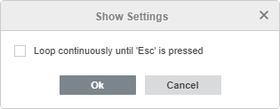
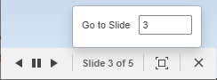
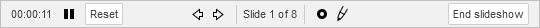

Pregledajte vašu prezentaciju
Pokrenite pregled
Napomena: Ako preuzmete prezentaciju koja je kreirana pomoću aplikacije treće strane, možete videti pregled animacionih efekata, ako postoje.
Da biste pregledali trenutnu prezentaciju u Presentation Editor-u, možete:
- kliknuti na ikonu Start slideshow na kartici Home gornje trake sa alatkama ili sa leve strane statusne trake, ili
- izabrati određeni slajd u listi slajdova sa leve strane, kliknuti desnim tasterom miša i izabrati opciju Start Slideshow iz kontekstnog menija.
Pregled će započeti od trenutno izabranog slajda.
Takođe možete kliknuti na strelicu pored ikone Start slideshow na kartici Home gornje trake sa alatkama i izabrati jednu od dostupnih opcija:
- Show from Beginning – za pokretanje pregleda od prvog slajda,
- Show from Current slide – za pokretanje pregleda od trenutno izabranog slajda,
- Show presenter view – za pokretanje pregleda u Presenter režimu koji omogućava da prikažete prezentaciju publici bez beleški slajda, dok istovremeno gledate prezentaciju sa beleškama na drugom monitoru.
- Show Settings – za otvaranje prozora sa podešavanjima koji omogućava podešavanje samo jedne opcije: Loop continuously until 'Esc' is pressed. Označite ovu opciju po potrebi i kliknite na OK. Ako omogućite ovu opciju, prezentacija će se prikazivati dok ne pritisnete taster Escape, tj. kada se dođe do poslednjeg slajda prezentacije, moći ćete ponovo da se vratite na prvi slajd itd. Ako onemogućite ovu opciju, kada se prikaže poslednji slajd prezentacije, pojaviće se crni ekran koji označava da je prezentacija završena i možete izaći iz Preview režima.

Koristite Preview režim
U Preview režimu možete koristiti sledeće kontrole u donjem levom uglu:

- dugme Previous slide omogućava povratak na prethodni slajd.
- dugme Pause presentation omogućava zaustavljanje pregleda. Kada se dugme pritisne, ono se menja u dugme .
- dugme Start presentation omogućava nastavak pregleda. Kada se dugme pritisne, ono se menja u dugme .
- dugme Next slide omogućava prelazak na sledeći slajd.
- Slide number indicator prikazuje trenutni broj slajda, kao i ukupan broj slajdova u prezentaciji. Da biste prešli na određeni slajd u Preview režimu, kliknite na Slide number indicator, unesite potreban broj slajda u otvorenom prozoru i pritisnite Enter.
- dugme Full screen omogućava prelazak u režim celog ekrana.
- dugme Exit full screen omogućava izlazak iz režima celog ekrana.
- dugme Close slideshow omogućava izlazak iz Preview režima.
Takođe možete koristiti prečice na tastaturi za kretanje između slajdova u Preview režimu.
Koristite Presenter režim
Napomena: u desktop verziji, Presenter režim se može aktivirati samo ako je povezan drugi monitor.
U Presenter režimu možete pregledati vašu prezentaciju sa beleškama slajdova u posebnom prozoru, dok istovremeno prikazujete prezentaciju bez beleški na drugom monitoru. Beleške za svaki slajd prikazane su ispod oblasti za pregled slajda.
Za navigaciju kroz slajdove možete koristiti dugmad i ili kliknuti na slajdove u listi sa leve strane. Brojevi skrivenih slajdova su precrtani u listi sa leve strane. Ako želite da prikažete slajd označen kao skriven drugima, jednostavno kliknite na njega u listi slajdova – slajd će biti prikazan.
Možete koristiti sledeće kontrole ispod oblasti za pregled slajda:

- dugme Timer prikazuje proteklo vreme prezentacije u formatu hh.mm.ss.
- dugme Pause presentation omogućava zaustavljanje pregleda. Kada se dugme pritisne, ono se menja u dugme .
- dugme Start presentation omogućava nastavak pregleda. Kada se dugme pritisne, ono se menja u dugme .
- dugme Reset omogućava resetovanje proteklog vremena prezentacije.
- dugme Previous slide omogućava povratak na prethodni slajd.
- dugme Next slide omogućava prelazak na sledeći slajd.
- Slide number indicator prikazuje trenutni broj slajda, kao i ukupan broj slajdova u prezentaciji.
- dugme Pointer omogućava isticanje sadržaja na ekranu tokom prikazivanja prezentacije. Kada je ova opcija omogućena, dugme izgleda ovako: . Da biste istakli objekte, pređite pokazivačem miša preko oblasti za pregled slajda i pomerajte pokazivač po slajdu. Pokazivač će izgledati ovako: . Da biste isključili ovu opciju, ponovo kliknite na dugme .
- simbol Pen omogućava uključivanje režima crtanja: izaberite tip olovke, boju isticanja i mastila, kao i brisanje prethodnih oznaka na slajdu.
- dugme End slideshow omogućava izlazak iz Presenter režima.